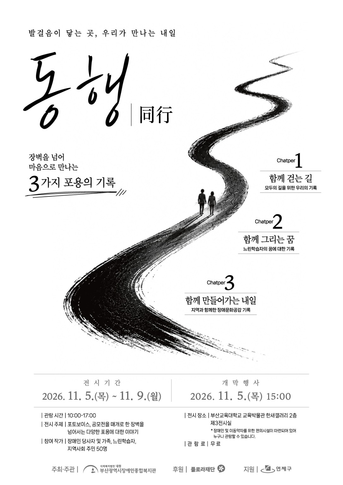

함께 걷는 길
모두의 길을 위한 우리의 기록
일상 속 무장애환경을 바라보며 누구나 함께 이동할 수 있는 길에 대해 이야기합니다.
장벽을 넘어 마음으로 만나는
3가지 포용의 기록
2026. 11. 5.(목) — 11. 9.(월)
전시 관람 안내 ↗
우리의 일상에서 마주하는 길, 각자의 마음에 품은 꿈, 그리고 지역사회가 함께 만들어 가는 내일. 사진과 이야기를 통해 장벽을 넘어 다양한 포용의 의미를 나누는 전시입니다.
포토보이스는 참여자가 직접 촬영한 사진과 그 안에 담긴 경험과 생각을 나누는 표현 방식입니다.
모두의 길을 위한 우리의 기록
일상 속 무장애환경을 바라보며 누구나 함께 이동할 수 있는 길에 대해 이야기합니다.
느린학습자의 꿈에 대한 기록
각자의 속도로 꿈을 그려 가는 사람들의 시선과 이야기를 만납니다.
지역과 함께한 장애문화공감 기록
서로의 다름을 이해하고 포용하는 지역사회의 내일을 함께 그립니다.
* 장애인 및 이동약자를 위한 편의시설이 마련되어 있어 누구나 관람할 수 있습니다.
네이버 지도에서 위치 보기 ↗